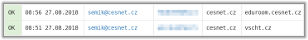

Monitoring eduroam infrastruktury
ermon.cesnet.cz - monitoring eduroam.cz infrastruktury je implementován pomocí SW icinga, je přístupný pouze správcům zapojených institucí (přihlášení vyžaduje účet z CESNET IdP). Obsahuje detailní informace o stavu všech zapojených RADIUS serverů. Dokumentace je na eduroam.cz.
monitor.eduroam.cz/matrix - poskytuje rychlý a komplexní přehled o stavu institucí zapojených do infrastruktury eduroam.cz. Matice je založena na výsledcích testovaní icingou všech zapojených organizací vzájemně mezi sebou. Přístup k matici je veřejný pro kohokoliv.
ermon.cesnet.cz/eps2 - správci institucí zapojených pomocí IPsec, mají k dispozici grafy spolehlivosti IPsec spojení.
Využití eduroam infrastruktury
etlog.cesnet.cz - zpracovává informace o uživatelské aktivitě z formátu fticks, které generuje národní RADIUS server. Ve webovém rozhraní jsou k dispozici informace o využívání eduroamu jednotlivými uživateli a institucemi. Systém umožňuje generovat grafy pro jednotlivé instituce komukoliv. K informacím o uživatelské aktivitě mají přístup jen správci domácích institucí. Systém etlog je komplexní, dokumentace je k dispozici.
ermon.cesnet.cz/roaming - je historická aplikace s grafy návštěvnosti jednotlivých lokalit, používá už zastaralou metriku postavenou na počítání unikátních uživatelů v jednotlivých dnech, v provozu je ponechána, protože má agregovaná data od počátku eduroamu v ČR. V současnosti se používá počítání Calling-Station-ID, které lépe pracuje s anonymními identitami.
Připojování k eduroam infrastruktuře
pripojovani.eduroam.cz - poskytuje přehled stavu připojených a především připojujících se organizací, které tak mohou samy kontrolovat stav realizace svého připojování. Stránka je také schopna poskytnout komplexní přehled na základě zvolených parametrů.
Dokumentace
eduroam.cz - web poskytuje dokumentaci týkající se všeho spojeného s infrastrukturou eduroam.cz. Pokud si nebudete s něčím vědět rady, zde byste měli najít odpověď.